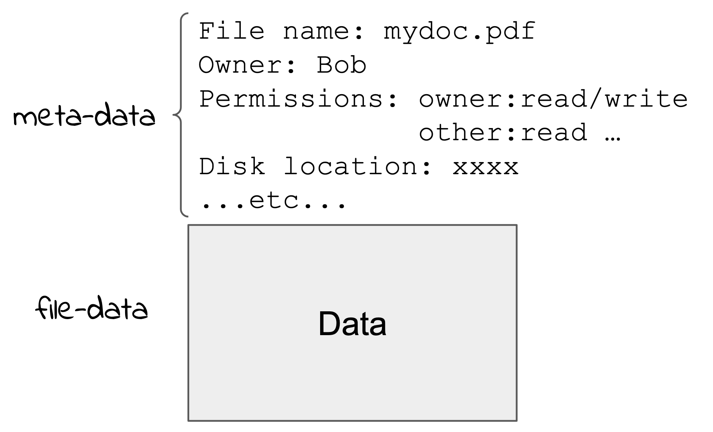
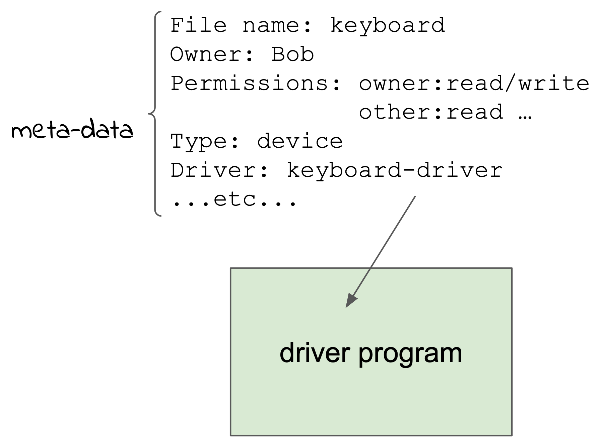
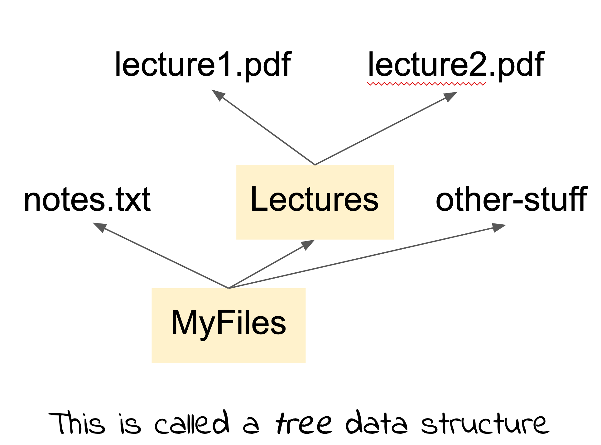

3.2 File System¶
Every user of a desktop or server system is familiar with the idea of the file. A file is a way of storing data in some form of mass storage. A key aspect of files is that they store any binary data and so can store any data that is represented in binary: numbers, characters, structured data, instructions etc.
The user interface to access files is usually some pictorial representation of files as folder icons and icons representing the file content. This helps the user build a mental model of the file system and how files are arranged. However, this can be very confusing for some people and give them an incorrect view of what is happening “under the hood”.
To illustrate this there is an old anecdote that describes a user that had filled their desktop screen with file icons. When the system detected that the disk was almost full it popped up a message saying “Low space - cleanup now”. The user responded by rearranging the icons so there was more room on the desktop. The user did not understand how the files were stored and that the desktop interface was a graphical representation only.
In the following description please try and forget your mental model as described by the user interface.
The mass storage devices we attach to computers are implemented with varying technology. The majority (in 2021) use some form of rotating magnetic disk that has binary data recorded on it. New systems use solid state or “silicon” storage which is a like the main memory only larger, cheaper and (importantly) persistent, that is you can turn it off and when you turn it on again the data is retained. We’ll discuss how the data is arranged on the disk later, but we just think of the data of a file stored in an area on the disk as a sort of “blob”.
If that’s all we had, blobs of data on the disk, we would have to refer to our files by the location on the disk. We would have to request that your program read the disk starting at location X for Y bytes. In the early days of computing this is exactly how mass storage was used. This is not very convenient when you start to get a lot of “blobs”! The solution was to store, somewhere else on the disk, a table of names and associated disk locations. Now we can refer to the blob by the name and have the system lookup the table and find the location on disk. This is where we get the concept of the computer file, and the name comes from an office file of papers that we might keep in a filing cabinet.
The table entry for a file is an example of something we call “meta-data”, ie data about data. In this case it is the name of the file. The key idea is that the data about the file (meta-data) is stored separately from the file data.
We can store more information about the file in meta-data. For example, in a multi-user system we store details of the owner of the file along with information about how users are allowed to access the file (read, write etc).
{kind=link}
Another important type of meta-data helps us to arrange the file data into “folders” or “directories”. Directories are simply lists of file or sub-directory names and the parent directory.
The usual user interface to files and directories on a desktop system consists of a graphical view with icons to represent files and directories. Clicking on a directory icon replaces it with the display of icons representing the contents of the directory. The program interface is only via system calls. The key system calls are: open, close, read, write, seek, delete.
File Access System Calls¶
The main system calls for accessing files in Unix are: open, close, read, write, creat (sic), delete and seek.
creat!
Oddly, the original system call to create a file in Unix is called “creat”. This abbreviation was chosen by Ken Thompson (one of the two developers of Unix). When asked what he would change about Unix, Ken famously said he would correct the spelling of creat.
The open system call has two parameters: the name of the file and flags that indicate if the file is open for read, writing etc. There is a slight complication with the name because the file it refers to is relative to the directory system, but I’ll get to the file “name-space” later.
When this system call is invoked the system finds the relevant file meta-data and sets up an internal structure to refer to the open file. The call returns a small integer that refers to this structure and is used in subsequent read/write operations on the file.
The read system call has three parameters: the integer returned by the open call, the address of a memory area to read the data into, and the count of bytes to read. The write system call is similar.
When a file is being read (or written) there is the concept of the “current position” of the file. Files start with the read position at the beginning. Subsequent reads start from where the last read finished. The seek system call sets the current position to anywhere you like before the next read.
The final part of each of the file access system calls involves operations on the file data itself. Read from the disk, write to it etc. Very early in the development of Unix the developers realised that the basic file operations could also be applied (mostly) to other other sources of data. So, for example, to read a character from a keyboard the same open and read system calls could be used. Of course it doesn’t make sense to write to a keyboard or create/delete/seek.
This is easy to arrange because we keep information about the file data in the meta-data area. We just have to have an indication there that this is not a regular file, it doesn’t have a location on disk, instead it shows what program (or “driver”) to use to access the data.
With this mechanism, not only do use the same set of (relevant) system calls and the meta-data mechanism, but the device can have a regular name like any normal file. Also, the name can appear anywhere in the directory structure since it is what is in the meta-data that specifies where the data comes from.
{kind=link}
The idea that devices should use the same set of system calls and appear in the same naming structure as regular files was one of Unix’s great innovations. It makes I/O very consistent and a program that reads from a regular file can also read from a device.
The data is being generated by the driver program from the physical device somehow. This could something simple like a keyboard, but also the mass storage, a network interface, a USB device etc.
The next major leap that can be done with this mechanism is to make the driver generate data from a service of some kind. For example, there may be some internal data structures of interest to user programs, such as the amount of CPU a program has consumed or the amount of memory etc. We can write a driver program that accesses these data structures and returns the values in response to reading from a “file” that is linked to the driver via the file meta-data.
This is very elegant! Instead of creating a special system call to get the data about a process, we just read it from a “file”.
Files, Directories and the Name-Space¶
We’ve seen how the file name is part of the file meta-data. The other major meta-data structure that everyone is familiar with are the directories (or folders) and the directory structure.
Hierarchical File System Structure
The idea of a “hierarchical” structure of folders/directories and files was first introduced in the Multics operating system developed at MIT starting in 1964. The Unix developers, Ken Thompson and Dennis Ritchie worked on Multics but decided it was too big and complicated and decided to develop a simple operating system but still incorporating the key ideas of the Multics file system.
A hierarchical or tree-structured file system just means that you can have files, and directories that contain files or subdirectories.
{kind=link}
Information about the files, devices and services is stored in the meta-data, and the structure (ie the tree) is described in the file system meta-data. A good way to talk about the directory structure is to talk about the name-space.
The name-space is just the set of names and their relationship (eg directory structure). What the names refer to is separate. As you’ve seen, a name could refer to a plain file, a device, or a service that generates data. We probably should not describe it as a “file-system” since many items referred to by the names are not files!
Because you could potentially link any name in the name-space (a “file name”) to a program that generates or receives the data, it is possible to very fancy things like make a network connection and read the data from some other machine entirely.
Plan 9
The successor to Unix, called “Plan 9” takes this to another level and makes every service across a distributed system available in the name-space. Plan 9 was not commercialised and only used in an academic setting.